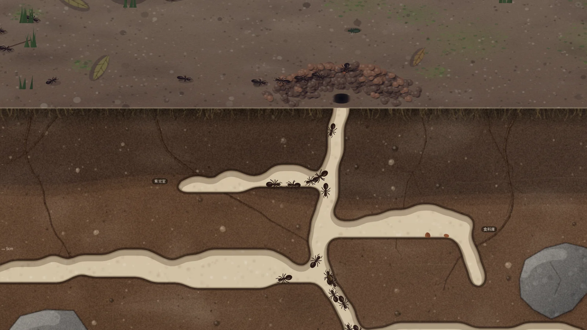

01
まぜるな危険!
ブラウザゲーム
元素を落として合体させるスイカゲーム形式のパズルに、実在の化学反応を入れました。混ぜてはいけないものを混ぜると爆発します。44種類の物質と41の反応を収録し、日本語と英語で遊べます。
TypeScript / matter.js / Vite / Cloudflare Pages
遊ぶ →
個人で作っているゲームと
シミュレーションの目録です。
01
ブラウザゲーム
元素を落として合体させるスイカゲーム形式のパズルに、実在の化学反応を入れました。混ぜてはいけないものを混ぜると爆発します。44種類の物質と41の反応を収録し、日本語と英語で遊べます。
TypeScript / matter.js / Vite / Cloudflare Pages
遊ぶ →02
アリの巣の観察シミュレーター
アリが巣を掘り、餌を運び、季節とともに世代を重ねる様子を、地上と土の断面で観察します。働きアリは年齢や経験、コロニーの必要から仕事を選び、フェロモンをたどって行列を作ります。
JavaScript / 外部パッケージなしで動作
観察する →
03
英単語ローグライクカードバトル
1単語が1枚のカードになるデッキ構築ゲームです。大学受験・英検・TOEICのコースがあります。オンライン対戦は、同じシードと操作列をそれぞれの端末で再現する方式です。
React / TypeScript / Vite / Cloudflare Workers / Durable Objects
制作中
04
MIDI鍵盤で遊ぶ音楽ゲーム
音ゲーを遊んでいたら、実際のピアノで曲を弾けるようになっていた。それを目指すブラウザゲームです。カノンとクラシックの計29曲を、区間ごとに練習できます。
TypeScript / Vite / Web MIDI / Cloudflare Workers / Supabase
制作中